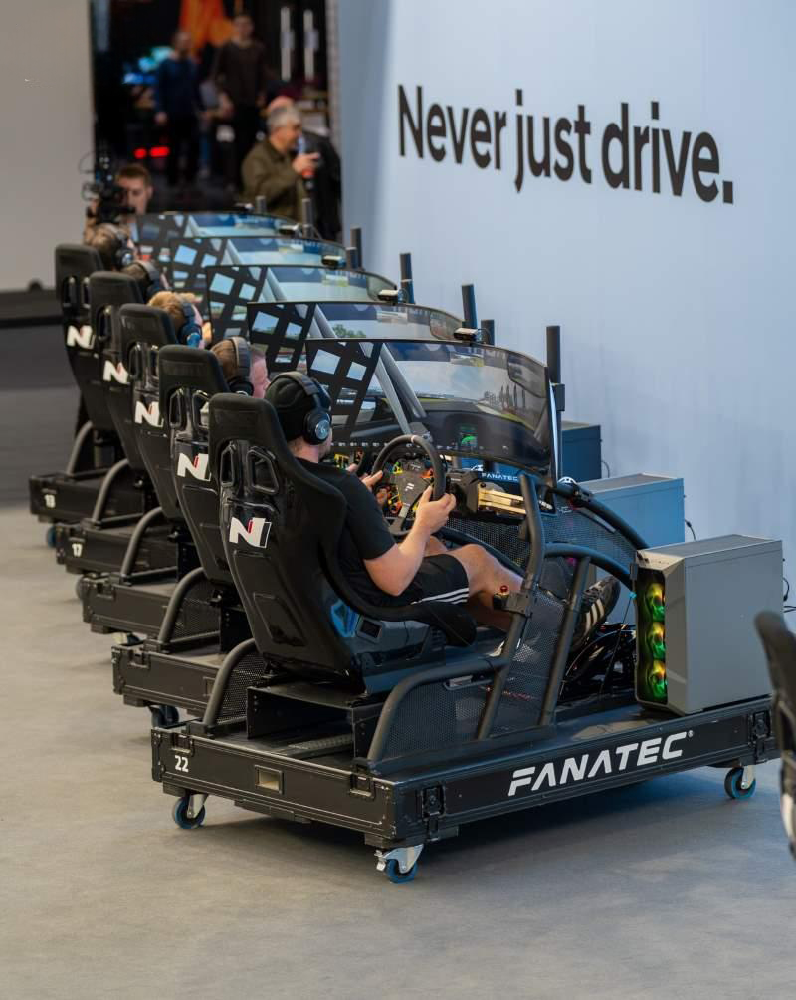
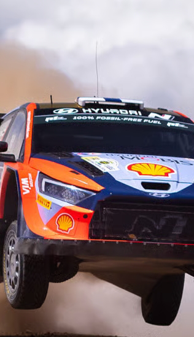

본문콘텐츠영역
About N
Never just drive.
MORE +
-
The Hyundai N brand is Hyundai Motor’s high-performance lineup, born from expertise and innovation cultivated on the world’s most competitive motorsport stages. Rather than simply building fast cars, N is designed with the vision of a “sports car for everyday life”, delivering thrills and excitement in every driving moment. With powerful engine performance, agile cornering, and track-proven durability, it allows every driver to experience the true essence of driving pleasure. More than just a means of transportation, the N brand creates a new driving culture, bringing pure joy on the road and redefining what it means to drive. By combining cutting-edge technology with distinctive design, it offers a sensory experience where driver and car become one.
- 

-
The N brand undergoes rigorous testing and development to deliver outstanding performance on both everyday roads and the racetrack. For drivers, it’s not just about mobility—it’s about creating their own unique driving story. Technology proven in motorsports seamlessly translates to daily driving, ensuring both safety and exhilaration for everyone. At the same time, N embodies relentless challenge and innovation, shaping the future of high-performance vehicles. Ultimately, Hyundai N realizes the core values of driving—pure joy and passion—in their most authentic form.
- 
Hyundai N has continuously proven its capabilities on the world’s most demanding motorsport stages.
From the WRC (World Rally Championship) to WTCR (World Touring Car Cup), N has achieved victories and milestones that inspire fans worldwide.
The data and insights gained on the track are directly applied to N production models, delivering the same performance on everyday roads.
Motorsport is not just competition—it serves as a laboratory where vehicles and technology are tested under extreme conditions.
Through this, Hyundai N explores the future of high-performance mobility and pioneers a new culture of driving.
Teamwork and innovative strategies embody the spirit of challenge and passion that defines the N brand.
Hyundai N’s motorsport activities go beyond racing, becoming a living stage that connects with fans around the globe.
-
Hyundai N showcases its motorsport spirit with outstanding performance in the WRC (World Rally Championship). Even in the toughest conditions, its cutting-edge technology proves the driving pleasure that Hyundai N stands for. The challenges faced on the WRC stage translate directly into innovation and excitement on the road.
-
By pushing limits in the Nürburgring 24-hour endurance race, true performance is proven. Technology tested under extreme conditions delivers confidence on every road. The experience from this race embodies N’s unique philosophy of driving pleasure.
-
In the TCR arena, fierce touring car battles prove agility and racing DNA. Sharp cornering and solid durability highlight strengths that carry over to everyday driving. This experience translates into the accessible driving pleasure that N delivers to its drivers.
N 2025 Vision Gran Turismo
From virtual to reality, driving the vision of future motorsport.

N 2025 Vision Gran Turismo
From virtual to reality, driving the vision of future motorsport.
Model
N’s performance lineup for road and track.
MORE +-
iONIQ 6 N
A sedan that combines cutting-edge electrification with N performance. Delivers thrilling driving on both the road and the track.
-
iONIQ 5 N
Pushes beyond the limits of electric performance. Maximizes driving pleasure with N-exclusive features and technology.
-
AVANTE N
2.0 turbo power, a high-performance sedan for road and track.
-
i20 N
Pure hot hatch excitement in a compact body.
-
i30 N
A versatile hatchback blending practicality and performance.